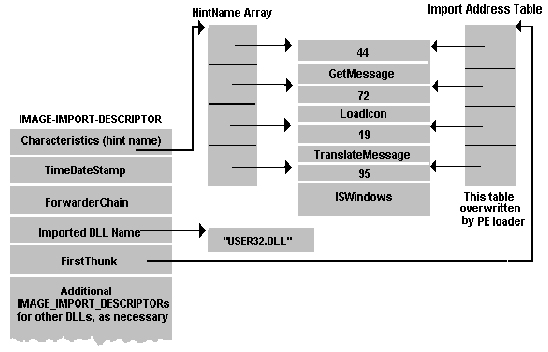

Dans ce chapitre je vais tacher d'expliquer en gros comment fonctionnent les imports dans le PE et les problèmes que nous rencontrons lors d'un dump. Je ne donne donc pas une méthode pour reconstruire les imports mais plutôt une approche de comment les reconstruire. Selon le packer utilisé, il y aura différentes méthodes plus ou moins complexe et à chaque fois différentes même si le principe reste le même.
Les imports sont des fonctions que notre programme appelle depuis des dll systèmes
de windows tels que USER32.dll, KERNEL32.dll, GDI32.dll etc... Ces fonctions
ne sont pas directement dans notre programme on dit qu'elles sont importés.
Notre programme a besoin de quelques informations sur ces fonctions
pour pouvoir y faire référence. Entre autres il a besoin de savoir le nom de
la dll où la fonction se situe et le nom de la fonction que l'on appelle.
Normalement ces infos sont placés dans une section du programme qui porte
le nom .idata ou encore .rdata. C'est facilement repérable visuellement
avec un éditeur hexa, du fait des noms des fonctions et des dll. Exemple :
00404590 f5 00 47 65 74 43 75 72-72 65 6e 74 44 69 72 65 ..GetCurrentDire
004045a0 63 74 6f 72 79 41 00 00-b0 02 55 6e 6d 61 70 56 ctoryA....UnmapV
004045b0 69 65 77 4f 66 46 69 6c-65 00 1b 00 43 6c 6f 73 iewOfFile...Clos
004045c0 65 48 61 6e 64 6c 65 00-5d 02 53 65 74 43 75 72 eHandle.].SetCur
004045d0 72 65 6e 74 44 69 72 65-63 74 6f 72 79 41 00 00 rentDirectoryA..
004045e0 12 01 47 65 74 46 69 6c-65 53 69 7a 65 00 d6 01 ..GetFileSize...
004045f0 4d 61 70 56 69 65 77 4f-66 46 69 6c 65 00 35 00 MapViewOfFile.5.
00404600 43 72 65 61 74 65 46 69-6c 65 4d 61 70 70 69 6e CreateFileMappin
La table des imports est une sorte d'index qui va indiquer les DLL et les fonctions qui sont importés.
La table des imports est un tableau ou chaque élément est une structure IMAGE_IMPORT_DESCRIPTOR. Il y a autant d'élément dans ce tableau que de DLL importées plus en dernier un élément vide pour délimiter la fin de l'Import-Table. Donc en théorie on peux calculer la taille de L'import table comme suit :
( nbr de dll * 5 dword) + 5 dword.
Note : L'offset et la taille de l'import-table sont accessible depuis le PE et donc avec un éditeur de PE. Si l'offset est indispensable la taille n'est pas vraiment nécessaire et d'après ce que j'ai remarqué on peux mettre un peu n'importe quoi ça ne change rien, par contre si l'on met une taille de 0, le programme se lancera quand même mais wdasm n'affichera aucune fonction importé.
Une structure IMAGE_IMPORT_DESCRIPTOR est composée des 5 DWORD suivants :
IMAGE_IMPORT_DESCRIPTOR struct OriginalFirstThunk dd 0 ;RVA vers un tableau original IAT (Import Adress Table) TimeDateStamp dd 0 ;non utilisé ici ForwarderChain dd 0 ;non utilisé ici DllName dd 0 ;RVA vers le nom de la DLL FirstThunk dd 0 ;RVA vers un 2eme tableau IAT (Import Adress Table) IMAGE_IMPORT_DESCRIPTOR ends
Le 1er élément (OriginalFirstThunk) est aussi appelé Characteristics.
Certains éléments de cette structure ne nous sont pas nécessaire ici, il faut en retenir simplement que cette structure pointe vers un nom de DLL, et vers 2 tableaux d'adresse (IAT) (1er et 5ème élément), ces 2 tableaux contiennent des pointeurs vers l'index suivi du nom de la fonction importés depuis la dll spécifiée par le 4eme élément.
Voici un schéma plus explicite

Le 1er membre de l'IMAGE_IMPORT_DESCRIPTOR (OriginalFirstThunk ou Characteristics) pointe vers un tableau ou chaque éléments pointe lui même vers une structure IMAGE_IMPORT_BY_NAME qui contient elle 2 éléments :
IMAGE_IMPORT_BY_NAME struct WORD Hint; ; index de la fonction dans la dll BYTE Name[?]; ; Nom de la fonction IMAGE_IMPORT_BY_NAME ends
La valeur de Hint n'est pas vraiment nécessaire pour nous et seul le 2ème élément Name est indispensable et pointe vers une chaîne de caractères portant le nom de la fonction.
Le 5ème élément FirstThunk est aussi un pointeur vers un tableau contenant des IMAGE_IMPORT_BY_NAME où chaque élément pointe vers l'index et nom de la fonction importé, exactement comme le 1er élément OriginalFirstThunk
En réalité le 1er tableau n'est pas indispensable et nous pouvons nous en passer.
Au moment où le programme est chargé en mémoire le PE loader va chercher ( si il existe ) le 1er tableau (OriginalFirstThunk) pour retrouver les noms des fonctions importés. Ensuite à l'aide des API LoadLibrary et GetProcAdress il va retrouver les adresses réelles des fonctions correspondantes au nom des fonctions et ira écraser le 2ème tableau en remplaçant chaque élément avec les adresses des fonction en mémoire.
Dans le cas ou le 1er tableau n'existe pas, on se sert du 2eme tableau (FirstThunk) pour lire le nom de la fonction et rechercher, toujours via GetProcAdress, son adresse, ensuite on écrase chaque éléments du 2eme tableau par l'adresse en mémoire de la fonction plutôt que son nom.
C'est pour cela lors d'un dump que ce 2ème tableau contient les adresses réelles des fonctions au lieu de pointer vers leurs noms, car en mémoire ce tableau a été modifié.
Là où ça se gâte dans notre dump c'est si ce 1er tableau n'existe pas, au lancement du programme, le PE-loader ne trouvant pas le 1er tableau ira alors aller chercher dans le 2eme tableau un pointeur vers un nom de fonction pour en obtenir l'adresse. Mais comme nous avons à la place déjà l'adresse, le programme va planter. Le problème ne se poserait pas si le 1er tableau existait, le PE loader au chargement du programme se servirait du 1er tableau pour initialiser le 2eme.
Et le grand problème est que la plupart des packers efface ce 1er tableau, celui-ci n'étant pas indispensable, pour récupérer un peu plus de place. Lors de notre dump nous obtiendrons alors un tableau de FirstThunk faussé qui ne pourra se rectifier automatiquement au chargement puisque le 1er tableau est manquant. Nous devrons donc reconstruire ce 2eme tableau ou du moins corriger les pointeurs pour pointer vers les noms des fonctions et non pas sur les adresses réelles en mémoire.
Mais rassurez vous il y'a des programmes qui font ça admirablement et dont la plupart des dumper sont équipés (procdump, lordpe etc....), le faire à la main serait vraiment une perte de temps et une source d'erreurs. Mais je vous explique quand même comment ça marche.
On se sert de l'API GetProcAdress qui nous retourne l'adresse de la fonction en mémoire d'après son nom. Voici en gros la démarche à suivre :
Si nous regardons l'adresse de l'Import-Table dans le PE d'un dump qui à été effectuer sur un programme packé, nous verrons que celle-ci pointe sur une table des imports propre au loader qui a servi à depacker le programme en mémoire et non pas vers la table des imports du programme. Il faudra alors rectifier cette adresse vers l'import-table originale. Le problème est là encore que certain packer garde celle-ci intacte et d'autre la détruise.
Dans le cas où celle-ci est détruite il faudra la reconstruire, ce qui est la relativement simple et rapide :
Il suffit de créer un IMAGE_IMPORT_DESCRIPTOR pour chaque DLL, et nous nous occuperont juste des 2 derniers éléments (DllName et FistThunk) que nous faisons pointer respectivement vers le nom de la DLL et vers le tableau de pointeur pointant vers les noms de fonction. On oublie pas d'ajouter la place d'une structure vide (5 dword) et on corrige le PE en mettant l'offset de l'import-table sur le 1er IMAGE_IMPORT_DESCRIPTOR que nous venons de créer, on peux aussi remplir le champ pour la taille de l'Import-Table, mais ne pas laisser la valeur 0 comme précédemment expliquer.
J'espère que vous aurez une vue d'ensemble du fonctionnement de la table des import un peu plus précise avec ce tutorial. Dans les tutoriaux suivant nous verrons des cas concrets avec des exemples précis pour différents packers où vous verrez que chaque cas sera différent.